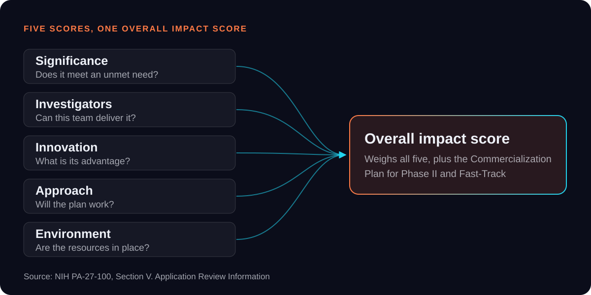
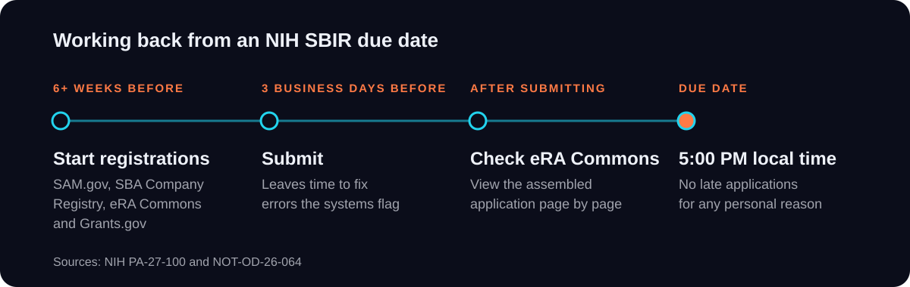

NIH SBIR · Grant Writing
How to Write an NIH SBIR Grant Proposal in 2026: What Changed and What Reviewers Score
Health companies apply for NIH SBIR grants every year to fund the research that turns a promising idea into a product ready for patients and clinicians. An NIH (National Institutes of Health) SBIR (Small Business Innovation Research) grant gives US small businesses funding to develop health technologies with commercial potential, without taking any equity in return. The award is decided entirely on paper. Reviewers never see the lab or the prototype, so the strength of a project reaches them only through how clearly the application explains the problem, the innovation and the route to market. When that explanation falls short, a sound project is scored as a weaker one, and the team waits a full review cycle to try again. Since 2026, each of those attempts has carried more weight. HHS (US Department of Health and Human Services) now caps the number of SBIR and STTR (Small Business Technology Transfer) applications a company can file in a year, and NIH no longer accepts SBIR or STTR applications submitted after the deadline. With fewer attempts and no room for a late filing, the proposal deserves the same planning and scrutiny a team gives its experiments.
SBIR Reauthorization 2026: What Changed for NIH Applicants
A team returning to NIH after the 2025 lapse will be tempted to pick up where it stopped, with the same template and the same assumptions. Much of that material refers to announcements and rules NIH has since retired. SBIR and STTR authority expired on October 1, 2025, and NIH withdrew its remaining small business announcements that November (NOT-OD-26-006). Congress restored both programs in April 2026 and extended them through September 30, 2031 (S. 3971).
NIH reopened submissions in August 2026 under two new announcements, PA-27-100 for SBIR and PA-27-102 for STTR. Each one replaces the announcement a company would have used before the lapse, and each brings changes an old template will miss. Clinical trials show the change most clearly. SBIR applicants once had to choose between two announcements, one for projects with a trial and one for projects without. PA-27-100 now accepts both, although some NIH institutes and all participating FDA centers still don't fund trials through it. Budgets have moved too. SBA raised the standard Phase I and Phase II limits on October 16, 2026 (SBIR.gov), so a budget copied from an older application asks for less than the current rules allow.
NIH SBIR Application Limit: Choosing Which Projects Get the Nine Slots
A company developing several products could once treat each NIH application as a separate bet, filed whenever the science was ready. Since April 2026, every bet draws from one shared allowance. HHS accepts no more than nine SBIR and STTR applications from a company in each fiscal year, counted across NIH, CDC and FDA together (NOT-OD-26-090). Every type of application counts toward the nine, including resubmissions, Fast-Track, Direct to Phase II and contract proposals. The only one left out is a standard Phase II, filed after the company has already won a Phase I award for the same project.
Resubmissions now call for the hardest judgment. NIH allows one resubmission of any application (NOT-OD-18-197), and under the limit it takes a slot a new project could have used. Before resubmitting, look closely at what the reviewers objected to. If they liked the idea but found gaps in how the work would be done, such as a missing control or an unclear milestone, a revised application can close those gaps. If they doubted the problem was worth solving, a revision is unlikely to change their view, and the slot may be better spent on a new application.
Settle the plan when the fiscal year opens on October 1. Link every planned application to an institute, a receipt date and the company milestone it is meant to fund.
SBIR vs STTR, and When Direct to Phase II Makes Sense
Choosing the right program and phase at the start can save a company months. Take a university spinout that has already shown its technology works, using data from an academic grant. If it applies for Phase I anyway, it spends a full Phase I period, and one of its nine slots, proving something it has already proved. Direct to Phase II would let it move straight into development.
Under SBIR, the company performs at least two thirds of the Phase I research and half of Phase II, and the principal investigator must work primarily for the company. STTR is built for a formal partnership, with the research institution doing at least 30% of the work and the company at least 40% (NIH SEED).
- Does the project depend on a formal research partnership?Yes → STTRNo → SBIR
- Has other funding already shown feasibility?Yes → Direct to Phase IINo → question 3
- Can the team write a full Phase II plan today?Yes → Fast-TrackNo → Phase I
Direct to Phase II now covers STTR as well as SBIR, which matters most to university spinouts holding feasibility data from academic grants. Fast-Track suits a team that can already write a full Phase II plan and wants no funding gap between the phases.
How to Write NIH SBIR Specific Aims Reviewers Can Score
Scientists learn to write aims for colleagues who share their field. An NIH study section mixes specialists with reviewers from neighboring disciplines, and the Specific Aims page has to make sense to all of them. Open with the clinical gap and the hypothesis that closes it. Each aim should end in a result someone could measure, and in Phase I that result should be the threshold that would justify Phase II, written as a number. Aims that depend on each other leave the whole project hanging on a single experiment.

Reviewers score significance, investigators, innovation, approach and environment separately, then give an overall impact score (PA-27-100). NIH doesn't require strength in all five. A clear aims page shapes how a reviewer reads the other four.
The Research Strategy gets six pages in Phase I, with no appendix allowed (NIH page limits), so every figure that proves feasibility has to earn its space. Give each risky aim an alternative, because the Approach score covers how the team manages its riskiest steps.
SBIR Commercialization Plan: What NIH Reviewers Look For
A Commercialization Plan written in the last week before submission tends to show it, with market claims that no letter or milestone supports. Phase II, Fast-Track and Direct to Phase II applications all need one, in up to twelve pages under six headings NIH sets (Form G.440). A Phase I application may not include one, though its reviewers still judge commercial potential under Significance.
- 01Value and Impact
- 02Company
- 03Market, Customer and Competition
- 04Intellectual Property
- 05Finance Plan
- 06Revenue Stream
The plan gets no separate score, but reviewers weigh it in the overall impact score. Their first question is whether the company understands the barriers between its product and the people who will buy it, from regulatory approval and insurance reimbursement to competing products, and has a strategy for each. For a health product, the regulatory and reimbursement milestones belong inside the aims, where a reviewer can see when each barrier will be cleared.
Venture-backed companies face one more question. Where a project duplicates well-funded private development, reviewers ask why it needs federal money despite the investment already behind it. Answer that before they ask, and support the Finance Plan with letters that commit funds or resources, each stating an amount and a date.
NIH SBIR Deadlines 2027 and the End of Late Applications
A finished application can still miss its cycle because a registration lapsed or a PDF failed a system check minutes before the cutoff. For due dates from May 25, 2026, NIH accepts no late SBIR or STTR application for any personal reason (NOT-OD-26-064). A federal system failure confirmed by the eRA Service Desk is the only exception left. A corrected file that arrives after 5:00 PM local time counts as late.
| Due date | Peer review | Council review | Earliest start |
|---|---|---|---|
| January 5, 2027 | March 2027 | May 2027 | July 2027 |
| April 5, 2027 | July 2027 | August 2027 | December 2027 |
Missing January 5 moves the earliest possible start from July to December 2027. SAM.gov, the SBA Company Registry, eRA Commons and Grants.gov must all be active before submission, and NIH warns that registration can take six weeks or more. Formatting can stop an application too. NIH can withdraw one for body text under 11 points, a password-protected PDF or text inside the half-inch margins (NIH format rules).

PA-27-100 expires on April 6, 2027. Confirm the replacement announcement in the NIH Guide before planning any later date.
Planning Your 2027 NIH SBIR Application
With the program settled through 2031, a health company can plan its NIH funding the way it plans product development, over several years and against clear milestones. A Phase I in 2027 can lead to a Phase II. For the strongest programs, it can go further still, to the strategic breakthrough awards of up to $30 million that the 2026 law created for Phase II companies (Crowell & Moring). The companies that gain most will choose their applications deliberately and write each one with the reviewer's questions already answered.
Frequently Asked Questions
Is SBIR reauthorized in 2026?
Yes. The Small Business Innovation and Economic Security Act became law on April 13, 2026, and it extends SBIR and STTR through September 30, 2031.
How many SBIR applications can a company submit per year?
Up to nine SBIR and STTR applications per fiscal year, shared across NIH, CDC and FDA. A standard Phase II that follows an awarded Phase I doesn't count toward the limit.
Can NIH accept a late SBIR application?
No, for due dates from May 25, 2026. The only exception is a federal system failure confirmed by the eRA Service Desk.
How much is an NIH SBIR Phase I grant in 2026?
The SBA guideline is $335,937 for Phase I and $2,239,578 for Phase II. NCI, NIA, NIAID, NIGMS, NIMH, NINDS and NCCIH accept Phase I budgets up to $700,000.
What is the difference between SBIR and STTR?
Under SBIR, your company does most of the work and employs the principal investigator. STTR needs a formal partnership with a research institution that performs at least 30% of the work.
Does an SBIR Phase I application need a commercialization plan?
No. NIH doesn't allow a Commercialization Plan in a Phase I application, but reviewers still judge commercial potential under Significance.
When are the NIH SBIR deadlines in 2027?
The standard due dates under PA-27-100 are January 5 and April 5, 2027, by 5:00 PM local time.
Sources
- S. 3971, Small Business Innovation and Economic Security Act (Congress.gov)
- NOT-OD-26-006, Early Expiration of NIH SBIR and STTR Announcements (NIH, November 2025)
- PA-27-100, NIH, CDC and FDA Parent SBIR Announcement (May 2026)
- PA-27-102, NIH Parent STTR Announcement (SBIR.gov)
- NOT-OD-26-090, HHS Annual Limit on SBIR and STTR Applications (NIH, July 2026)
- NOT-OD-26-064, Late Application Policy for Small Business Applications (NIH, March 2026)
- NOT-OD-18-197, NIH and AHRQ Application Submission and Resubmission Policy (NIH, July 2018)
- About SBIR and STTR, Award Guidelines (SBIR.gov)
- Understanding SBIR and STTR (NIH SEED)
- Table of Page Limits (NIH)
- Form G.440, SBIR/STTR Information Form (NIH)
- Format Attachments (NIH)
- SBIR/STTR Programs Reauthorized After Six-Month Lapse (Crowell & Moring)